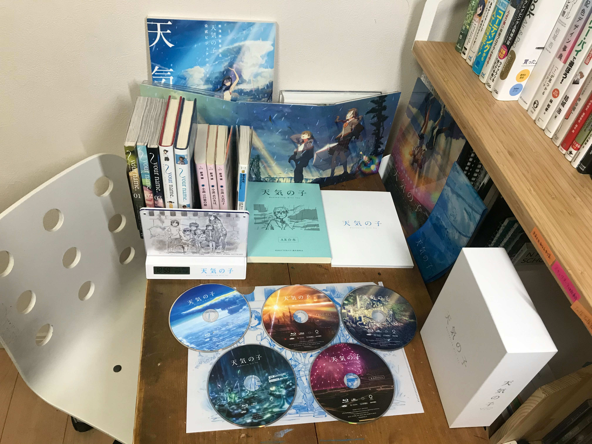

『天気の子』Blu-rayコレクターズエディションが届いたら大喜びしすぎて弟に引かれた15歳の日記
May 26, 2020location_onTokyocreateMamoru Itoi
blogMovies
君の名は。
糸井主歩（いとい・まもる）です。新海誠監督とRADWIMPSが大好き。
と言っても（恥ずかしながら）監督を知ったのもRADWIMPSを知ったのも『君の名は。』からでした。そもそも映画館に観に行ってないし。最初に観たのは、家でたまたま録画していた地上波初放送（2018年1月3日放送）でした。終わった瞬間に全身の力がふっと抜ける気がして、「こんな壮大な物語があっていいのか……？」などと考えたり。あと、『君の名は。』でヒロイン・三葉が住んでいる町の名前が「糸守」なんですが、僕の名前は「糸井まもる」なんですよ！ これすごくないですか⁉︎ もはや運命……としか思えなくなって、それから同じ録画を100回くらい観てしまいました（もっと観たかも）。そこから新海監督とRADWIMPSが大好きになり、『雲のむこう、約束の場所』『秒速5センチメートル』『星を追う子ども』『言の葉の庭』（新海監督の過去作）を観たりRADの曲を聴きまくったりという2年間を送ってまいりました。
その12月に何かの授賞式で代々木に行ったのですが、そのとき初めて新海監督作品によく出てくるドコモタワーを見ることができて、ああ、あの世界は、僕たちのいる世界でもあるんだな、となんだかとても感動したのを覚えています。そしたらね、その日が『天気の子』の制作発表の日だったんですよ！ ヤバくない？
天気の子
というわけで、『天気の子』も公開されたあと映画館で3回観ました。なんかネット上には120回とか観ている猛者の方がいたりするんですが、中学生なのでできません。はい。
1回目見たときよりも2回目、3回目に観たときの方が感動しました。特に主人公の帆高は、僕と同い年なんですよ。学年が同じとかではなく、同じ2005年度生まれなんです。ああ、早く家で観られるようになりたいな……。
と半年思い続け、DVDとBlu-rayの発売がついに決定。「コレクターズエディション」という特典ディスクがついてくるやつが……12000円かあ……。……いやしかし、お年玉を全額と貯金をすべて使えば残金がほぼ0になるが買える！ などと威勢のいいことを考えてマジで買ってしまいました。若いって、怖いね。
今日届いた
「ふわっ、寝遅れたか！ いやいやまだ7時30分だ。まだ届いてはおらぬはず」とメロス的な朝を迎え、ひたすら待つこと2時間。
「ピンポーン」
はい。これは、やばいやつですね。はい。ちなみに周りに写っているのは『言の葉の庭』などの小説版4冊とか公式ビジュアルガイドとかです。右側の本棚に立てかけてあるのはAmazon.com限定特典の長傘カバー！ これから梅雨だし、大切に使う。
早速観た
本編スタート
すごい！ 映画館で流れてたCMがカットされてる！（ハズキルーペみ）
序盤
めっちゃテンポが速い。帆高がめっちゃ東京を楽しんでるな。というか、東京のビルってこんなにエモいんですね。最近外出しないからこういうビル群を見てると懐かしくなる。
花火大会の場面
やっべえみんなこんな混んでたらソーシャルディスタンスが……。違った、これ2021年だった。
陽菜の誕生日〜逃亡
なんかギャグシーンと泣かせるシーンが交互に押し寄せる。……あ、ここ！ 須賀さんが警察官に馬乗りして帆高を逃してあげるんだよ！ ここ映画館で泣いたわ……。今も目頭熱いけど。
陽菜の救出
『グランドエスケープ』、めっちゃいいよな。「天気なんて、狂ったままでいいんだ！」っていうセリフは企画書段階ですでにあったらしい。帆高かっこいい。そういえば、人工言語を作ったときに最初に翻訳したのは『グランドエスケープ』だったな。
大丈夫
3年後。帆高は大学1年生。そうそう、僕このエンディング曲の『大丈夫』、大好きなんだよね！ ピアノでもギターでも弾けるようになったし、何より……そう、これ！ タイトルが出る瞬間の野田さんの声が、少し泣きそうな声なんだよね。これが最高。
これから。
（エンドロールが終わり……）
やべえわ。これから毎日これ観られるんでしょ？ 休校もうすぐ終わるけど、それまでは毎日観るわ。いや、なんかさ、純粋に感動したけどこれってつくるのに計り知れない努力とか苦労があったんだよな。公開初日の舞台挨拶で野田さん泣いてたし。
『天気の子』では気候変動が大きなテーマになっているけれど、僕たちの世代からすると気候が「変動した」というよりは「もともとおかしかった」という感覚だ。生まれたときから真夏は40℃近くあったし、大雨で電車が止まるのも珍しくない。
気候変動だけじゃない。今だって新型コロナウイルスのパンデミックは僕たちの日常を大きく変えようとしているし、あの「日常」はもう、二度と戻ってこないのだと思う。
『天気の子』の中の東京もそうだ。もう雨は降り止まないかもしれない。晴れと曇りと雨があったあの日常はもう戻ってこないかもしれない。それでも帆高は陽菜に「僕たちはきっと、大丈夫だ」と言った。どんなに世界が変わっても、僕たちは生きていくと。
ならばもう、僕もここで生きていくことを決めたいと思う。日常が戻ってくることを待つよりも、新しい非日常の中で生きていこう。
とか言ってますが
これ以上こういうことを書くと、本心で書けども将来見返したときに恥ずかしさで死ぬと思うので止めておきます。でも、本当に大好きな作品なのでこれから毎日（高画質で！）観られると思うと嬉しすぎる……。それに11時間分も収録されている特典ディスクもじっくり観ていきたいし。
あと、新海監督は今次回作の制作真っ最中だそうです！ 楽しみすぎる！
というわけで、今日はこの辺で。